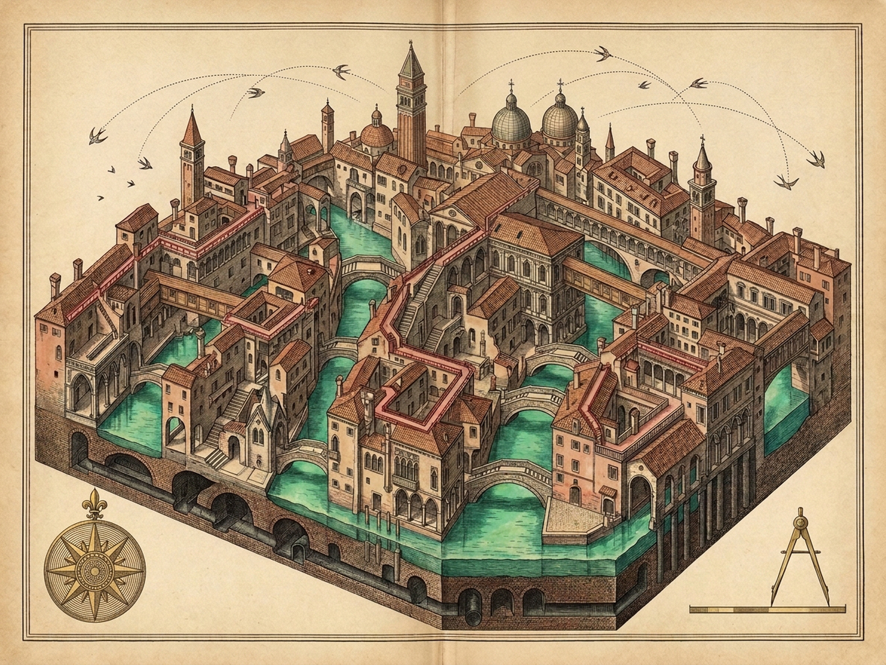
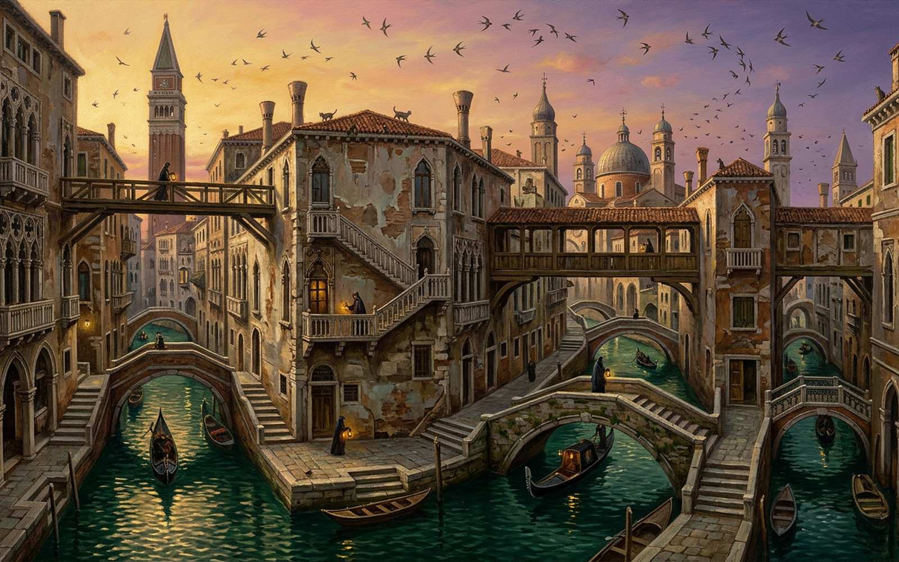

Esmeralda · Codex of Four Inks and One Ungovernable Sky
Canals, stepped streets, cat-roofs & rat-sewers fixed in ink; the swallows' parabolas, never.
Itinerary Day 1
Combinatorial Zigzags —
Unique Non-Repeating 1 · 0 repeats
Terrestrial Inks 4/4 Terrestrial Inks Fixed
Airborne Ink Swallow Ink: Unfixed in Air
Dominance 14/14 Points Dominated
Tap a bridge, gutter, balcony, manhole or swallow. Keys: 1–5 inks · N zigzag · F fix swallow ink.
The Inkwells — What Paper Can Hold
Dip a well to lay or lift its stratum. Four inks fix on vellum; the fifth will not stay.
[1]Emerald Canal
Liquid Evident — Fixed
[2]Vermilion Steps & Bridges
Solid Evident — Fixed
[3]Violet Cat & Lover Roofs
Discontinuous High — Fixed
[4]Sepia Rat & Smuggler Sewers
Subterranean — Fixed
[5]Swallow-Gold Airy Ink
UNFIXABLE ON VELLUM
New Daily Zigzag [N]
Dip All Four Inks
The Airy Vault — What Paper Cannot Hold
Over the roofs the swallows drop along invisible parabolas with still wings, dart for a mosquito, spiral up grazing a pinnacle — and from every point of their path they hold every point of the city.
Fix Swallow Ink on Paper [F]
Next Swallow [S]
Mosquito Dart [D]
Pinnacle Spiral [G]
3D Airy Vault Tilt [V]
Sound [M]
Reset [R]
Royal Plates [P]
Swallow ink has never dried on this vellum. Press [F] to try.
Royal Plates of the Canal Survey
Diptych
Survey Map
Pinnacle Vista
Loupe 1.8x [Z]
Close [Esc]

Survey in four fixed inks: emerald water, vermilion stone, violet roof-leaps, sepia sewers.

Vista over canals and pinnacles, where the swallows refuse the page.